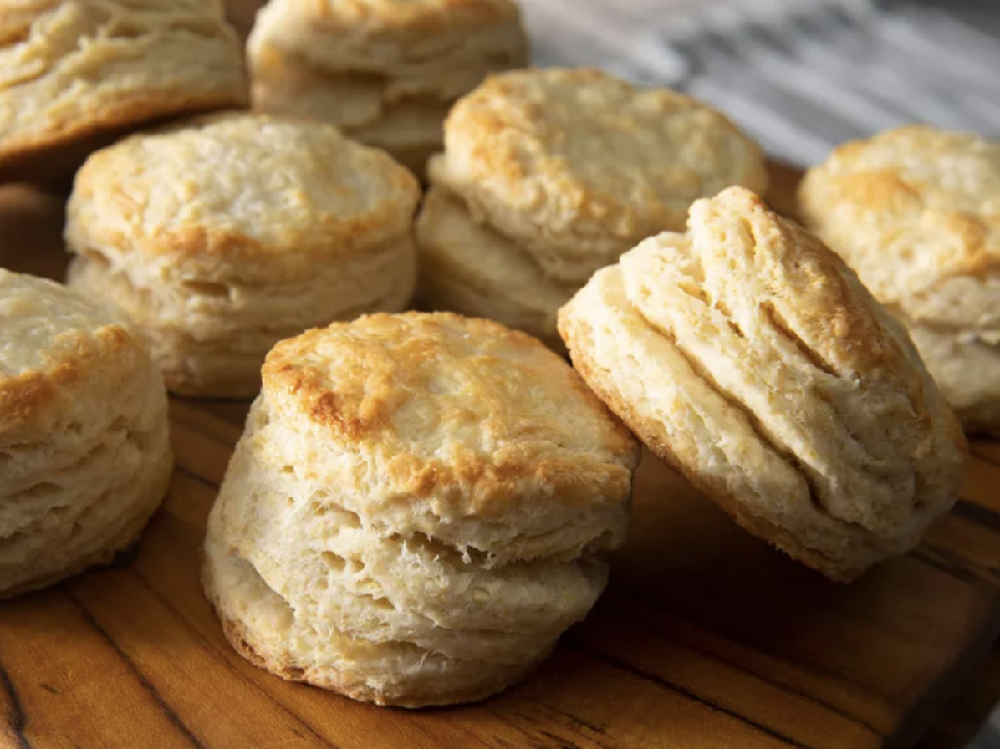

Buttermilk Biscuits

Simple and lovely biscuits
They taste of Home.
Ingredients
- 2 cups all-purpose flour
- 2 teaspoons baking powder
- ¼ teaspoon baking soda
- 7 tablespoons unsalted butter,
chilled in freezer and cut into thin slices
- ¾ cup cold buttermilk
- 2 tablespoons buttermilk for brushing
Steps
- Preheat oven to 425 degrees F (220 degrees C).
Line a baking sheet with a silicone baking mat or parchment paper.
- Whisk flour, baking powder, baking soda, and salt together in a large bowl.
Add cold butter slices and cut into the flour with a pastry blender until the mixture resembles coarse crumbs.
- Make a well in the center of the mixture.
Pour cold buttermilk into the well and stir gently until just combined.
- Turn dough onto a floured work surface and pat it together into a rectangle.
- Fold the rectangle in thirds.
Turn dough a half turn, gather any crumbs, and flatten back into a rectangle.
Repeat twice more, folding and pressing the dough a total of three times.
- Roll dough on a floured surface to about 1/2 inch thick.
Use a 2 1/2-inch round biscuit cutter to cut biscuits.
Reroll any scraps to cut more biscuits; you should get 12 total.
- Transfer biscuits to the prepared baking sheet.
Press an indent into the top of each biscuit with your thumb.
Brush buttermilk over the tops.
- Bake in the preheated oven until biscuits are flaky and golden brown, about 15 minutes.
- Enjoy!
Lovely tip
Serve with tea!